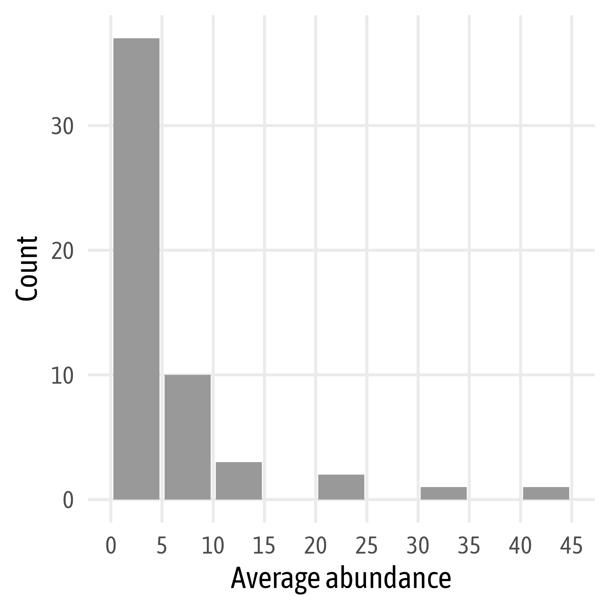
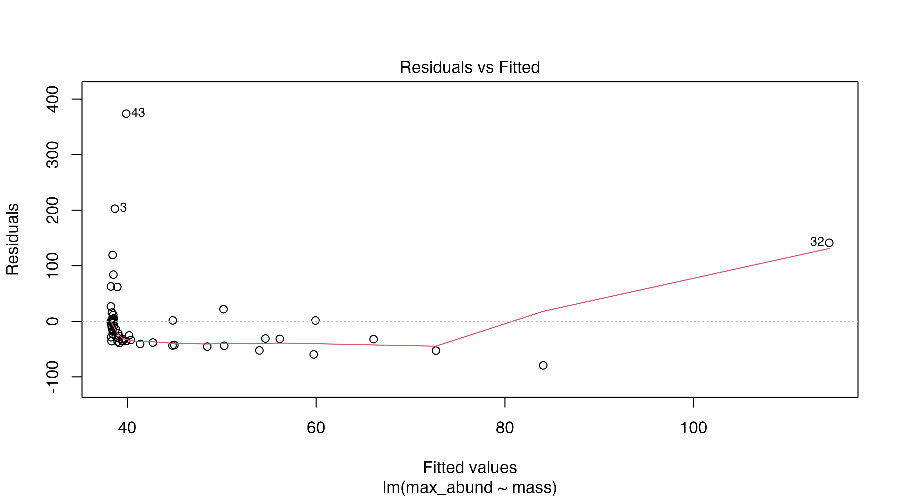
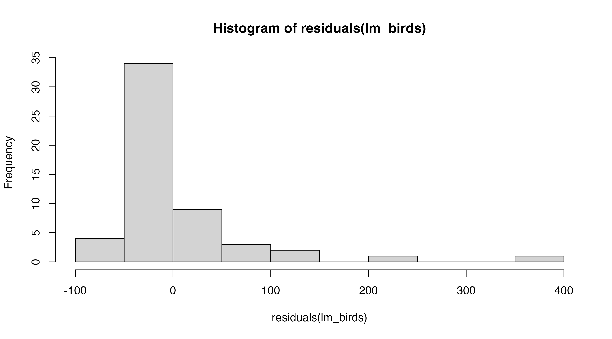
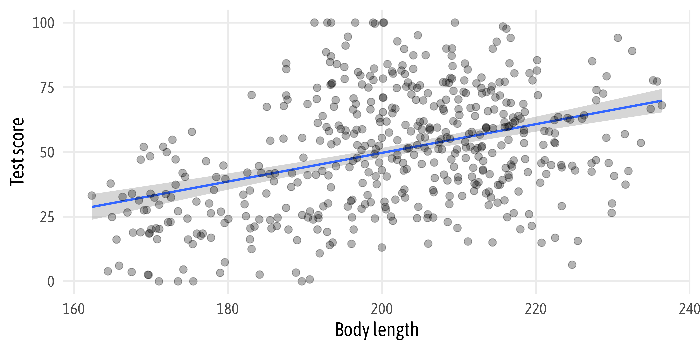

Reproducible Data Analysis with R
— Statistical Analysis & Modeling —

The data science workflow, modified from “R for Data Science”

The data science workflow, modified from “R for Data Science”

The data science workflow, modified from “R for Data Science”
Statistical Models
A statistical model is a mathematical representation of observed data:
A statistical model is a class of mathematical model, which embodies a set of assumptions concerning the generation of some sample data, and similar data from a larger population.
A statistical model represents, often in considerably idealized form, the
data-generating process.
Source: Wikipedia
Statistical Models
A statistical model is a mathematical representation of observed data:
A statistical model is a class of mathematical model, which embodies a set of assumptions concerning the generation of some sample data, and similar data from a larger population.
A statistical model represents, often in considerably idealized form, the
data-generating process.
Source: Wikipedia
→ data is generated by a probabilistic process
→ each element of the population is selected with a (known) probability
→ it is (should be) possible to infer features of the population
Our Example Data ü¶âüïäÔ∏èü¶Ö
- data set on 54 bird families recorded on a site in North America
- the following variables are reported:
- the species
- the diet type of the species
- a yes/no classification if the species is a passerine or not
- a yes/no classification if the species is considered aquatic or not
- the average and maximum abundance observed at the site
- the average body mass in grams
- provided as educational resource by the Quebec Centre for Biodiversity Science
Our Example Data ü¶âüïäÔ∏èü¶Ö
# A tibble: 54 × 7
family max_abund avg_abund mass diet passerine aquatic
<chr> <dbl> <dbl> <dbl> <chr> <dbl> <dbl>
1 Hawks&Eagles&Kites 2.99 0.674 716. Vertebrate 0 0
2 Long-tailed tits 37.8 4.04 5.3 Insect 1 0
3 Larks 241. 23.1 35.8 PlantInsect 1 0
4 Kingfishers 4.4 0.595 119. Vertebrate 0 0
5 Auks& Puffins 4.53 2.96 315. InsectVert 0 1
6 Ducks& Geese 23.7 2.74 1144. PlantInsect 0 1
7 Anhingas 24.6 1.84 1250 Vertebrate 0 1
8 Swifts 44.0 3.95 27.4 Insect 0 0
9 Limpkins 1.6 0.567 1100 Insect 0 1
10 Herons& Egrets 46.5 2.97 462. Vertebrate 0 1
# ‚Ķ with 44 more rowsOur Example Data ü¶âüïäÔ∏èü¶Ö
# A tibble: 54 × 7
family max_abund avg_abund mass diet passerine aquatic
<fct> <dbl> <dbl> <dbl> <fct> <fct> <fct>
1 Hawks&Eagles&Kites 2.99 0.674 716. Vertebrate 0 0
2 Long-tailed tits 37.8 4.04 5.3 Insect 1 0
3 Larks 241. 23.1 35.8 PlantInsect 1 0
4 Kingfishers 4.4 0.595 119. Vertebrate 0 0
5 Auks& Puffins 4.53 2.96 315. InsectVert 0 1
6 Ducks& Geese 23.7 2.74 1144. PlantInsect 0 1
7 Anhingas 24.6 1.84 1250 Vertebrate 0 1
8 Swifts 44.0 3.95 27.4 Insect 0 0
9 Limpkins 1.6 0.567 1100 Insect 0 1
10 Herons& Egrets 46.5 2.97 462. Vertebrate 0 1
# ‚Ķ with 44 more rowsOur Example Data ü¶âüïäÔ∏èü¶Ö
# A tibble: 54 × 7
family max_abund avg_abund mass diet passerine aquatic
<fct> <dbl> <dbl> <dbl> <fct> <fct> <fct>
1 Hawks&Eagles&Kites 2.99 0.674 716. Vertebrate 0 0
2 Long-tailed tits 37.8 4.04 5.3 Insect 1 0
3 Larks 241. 23.1 35.8 PlantInsect 1 0
4 Kingfishers 4.4 0.595 119. Vertebrate 0 0
5 Auks& Puffins 4.53 2.96 315. InsectVert 0 1
6 Ducks& Geese 23.7 2.74 1144. PlantInsect 0 1
7 Anhingas 24.6 1.84 1250 Vertebrate 0 1
8 Swifts 44.0 3.95 27.4 Insect 0 0
9 Limpkins 1.6 0.567 1100 Insect 0 1
10 Herons& Egrets 46.5 2.97 462. Vertebrate 0 1
# … with 44 more rowsStatistical Analysis
— Univariate Data —
Univariate Data
Univariate describes data that consist of only a single characteristic.


Univariate Data
Univariate describes data that consist of only a single characteristic.
Univariate Descriptive Statistics
There are two key concepts for evaluating the distribution of a single variable:
- localization
- variation
Univariate Descriptive Statistics
Localization is a measure of central tendency of a population.
Univariate Descriptive Statistics
Variation is the a measure of dispersion (or deviation) of observations around the mean.
Variance is the sum of the squared deviation between each value. Squaring the variance allows us to transform values into positive values without using absolute values.
Univariate Descriptive Statistics
To transform the variance into appropriate units, we can calculate the
standard deviation σ:
Univariate Descriptive Statistics
Mean and median differ in case the distribution is asymmetrical:

Univariate Descriptive Statistics
Univariate Descriptive Statistics
Compare Distributions
The Shapiro-Wilk test is used to compare the distribution of a variable with a reference probability probability distribution:
Shapiro-Wilk normality test
data: birds$avg_abund
W = 0.59272, p-value = 5.394e-11Null hypothesis: values follow a normal distribution
→ We reject Ha. The values are not distributed normally.
Compare Distributions
An alternative is the Kolmogorov-Smirnov test to test for normality:
Asymptotic one-sample Kolmogorov-Smirnov test
data: birds$avg_abund
D = 0.69907, p-value < 2.2e-16
alternative hypothesis: two-sidedNull hypothesis: values follow a normal distribution
→ We reject Ha. The values are not distributed normally.
Compare Distributions
The Chi-square goodness-of-fit test is much more flexible and can also be used for other distributions:
Chi-squared test for given probabilities
data: birds$avg_abund
X-squared = 634.35, df = 53, p-value < 2.2e-16Null hypothesis: values do not follow a uniform distribution
→ We reject Ha. The values are not distributed uniformly.
[1] 0.01851852 0.01851852 0.01851852 0.01851852 0.01851852 0.01851852 0.01851852 0.01851852 0.01851852
[10] 0.01851852 0.01851852 0.01851852 0.01851852 0.01851852 0.01851852 0.01851852 0.01851852 0.01851852
[19] 0.01851852 0.01851852 0.01851852 0.01851852 0.01851852 0.01851852 0.01851852 0.01851852 0.01851852
[28] 0.01851852 0.01851852 0.01851852 0.01851852 0.01851852 0.01851852 0.01851852 0.01851852 0.01851852
[37] 0.01851852 0.01851852 0.01851852 0.01851852 0.01851852 0.01851852 0.01851852 0.01851852 0.01851852
[46] 0.01851852 0.01851852 0.01851852 0.01851852 0.01851852 0.01851852 0.01851852 0.01851852 0.01851852Univariate Statistics
There are multiple tests to compare the mean of a single, continuous explanatory variable to a theoretical or hypothetical mean:
The three possible alternative hypotheses are:
- two-tailed → Ha: x̄ = µ0 (
two.sided) - right-tailed → Ha: x̄ > µ0 (
greater) - left-tailed → Ha: x̄ < µ0 (
less)
One-Sample Student’s t-Test
A formal statistical test to compare the mean of a continuous variable to a theoretical or hypothetical mean is the one-sample student’s t-test.
→ We accept Ha. The mean is not equal to 0.
One-Sample Student’s t-Test
A formal statistical test to compare the mean of a continuous variable to a theoretical or hypothetical mean is the one-sample student’s t-test.
One Sample t-test
data: birds$avg_abund
t = 0.61122, df = 53, p-value = 0.5437
alternative hypothesis: true mean is not equal to 5
95 percent confidence interval:
3.434453 7.937905
sample estimates:
mean of x
5.686179 → We reject Ha. The mean is equal to 5.
One-Sample Student’s t-Test
A formal statistical test to compare the mean of a continuous variable to a theoretical or hypothetical mean is the one-sample student’s t-test.
One Sample t-test
data: birds$avg_abund
t = 5.065, df = 53, p-value = 5.28e-06
alternative hypothesis: true mean is not equal to 0
95 percent confidence interval:
3.434453 7.937905
sample estimates:
mean of x
5.686179 → We accept Ha. The mean is not equal to 0.
One-Sample Student’s t-Test
A formal statistical test to compare the mean of a continuous variable to a theoretical or hypothetical mean is the one-sample student’s t-test.
One Sample t-test
data: birds$avg_abund
t = 5.065, df = 53, p-value = 2.64e-06
alternative hypothesis: true mean is greater than 0
95 percent confidence interval:
3.806753 Inf
sample estimates:
mean of x
5.686179 → We accept Ha. The mean is greater than 0.
One-Sample Student’s t-Test
A formal statistical test to compare the mean of a continuous variable to a theoretical or hypothetical mean is the one-sample student’s t-test.
Assumption that needs to be fulfilled:
- a random sample of continuous measurements
- normality of the data (non-skewed distribution)
- no knowledge of the true population variance
Check Normality of the Data
Shapiro-Wilk normality test
data: birds$avg_abund
W = 0.59272, p-value = 5.394e-11Null hypothesis: values follow a normal distribution
→ We accept Ha. The values are not distributed normally.
Shapiro-Wilk normality test
data: log10(birds$avg_abund)
W = 0.9846, p-value = 0.7124Null hypothesis: values follow a normal distribution
→ We reject Ha. The (log-transformed) values are distributed normally.
One-Sample Student’s t-Test
A formal statistical test to compare the mean of a continuous variable to a theoretical or hypothetical mean is the one-sample student’s t-test.
One Sample t-test
data: log10(birds$avg_abund)
t = 6.5546, df = 53, p-value = 2.347e-08
alternative hypothesis: true mean is not equal to 0
95 percent confidence interval:
0.3227987 0.6074655
sample estimates:
mean of x
0.4651321 → We accept Ha. The mean is not equal to 0.
One-Sample Student’s t-Test
A formal statistical test to compare the mean of a continuous variable to a theoretical or hypothetical mean is the one-sample student’s t-test.
One Sample t-test
data: log10(birds$avg_abund)
t = -0.49135, df = 53, p-value = 0.6252
alternative hypothesis: true mean is not equal to 0.5
95 percent confidence interval:
0.3227987 0.6074655
sample estimates:
mean of x
0.4651321 → We reject Ha. The mean is equal to 0.5.
One-Sample z-Test
Another approach to test for differences of the population average is the z-test.
Why and When?
- If the variation in the population is known and
- if the sample size is ≥ 30
One-Sample z-Test
Let’s create some large sample with a known mean and variation:
One-Sample z-Test
Let’s create some large sample with a known mean and variation:
One-sample z-Test
data: dist
z = -0.36835, p-value = 0.7126
alternative hypothesis: true mean is not equal to 500
95 percent confidence interval:
492.6372 505.0331
sample estimates:
mean of x
498.8352 → We reject Ha. The mean is equal to 500.
One-Sample z-Test
Let’s create some large sample with a known mean and variation:
# install.packages("BSDA")
BSDA::z.test(dist, mu = 500, sigma.x = 10) ## note that mu fits but sigma.x doesn't!
One-sample z-Test
data: dist
z = -3.6835, p-value = 0.0002301
alternative hypothesis: true mean is not equal to 500
95 percent confidence interval:
498.2154 499.4550
sample estimates:
mean of x
498.8352 → We accept Ha. The mean is not equal to 500.
Statistical Analysis
— Bivariate Data —
Bivariate Data
Bivariate describes data that consist of two characteristics.
Responses and Predictors
A bivariate statistical model describes the relationship between a response variable and one or more predictor variables.
- response variable:
variable we want to explain, also known as the dependent variable - explanatory variable(s):
variable(s) that can (potentially) explain the response variable
Our Research Question
Hypothesis
The habitat preferences of different bird species affect the average abundance due to different availability of habitat.
Prediction
The average abundance differs between aquatic and terrestrial bird families.
Two-Sample Student’s t-Test
A formal statistical test to test for difference a single, categorical explanatory variable with two levels is the two-sample student’s t-test.
Assumptions that needs to be fulfilled:
- Normality of the data (non-skewed distribution)
- Homoscedasticity (similar variance of both levels)
The robustness of the t-test increases with sample size and is higher when groups have equal sizes.
Verify Assumptions for t-Test
Check sample sizes:
Check equality of variances:
F test to compare two variances
data: avg_abund by aquatic
F = 0.84667, num df = 38, denom df = 14, p-value = 0.6559
alternative hypothesis: true ratio of variances is not equal to 1
95 percent confidence interval:
0.3155069 1.8900778
sample estimates:
ratio of variances
0.8466711 → We reject Ha. The ratio is equal to 1, i.e. variances are equal.
Two-Sample Student’s t-Test
A formal statistical test to test for difference a single, categorical explanatory variable with two levels is the two-sample student’s t-test:
Two Sample t-test
data: avg_abund by aquatic
t = -0.14964, df = 52, p-value = 0.8816
alternative hypothesis: true difference in means between group 0 and group 1 is not equal to 0
95 percent confidence interval:
-5.455121 4.697991
sample estimates:
mean in group 0 mean in group 1
5.581022 5.959587 → We reject Ha. The abundance does not differ between groups.
Our Research Question
Hypothesis
The habitat preferences of different bird species affect the average abundance due to different availability of habitat.
Prediction
The average abundance of aquatic families is lower than the average abundance of terrestrial families.
Unilateral Two-Sample Student’s t-Test
One can also test whether one mean is higher than the other one:
## mean of level 1 is "greater" than that of level 2
t.test(avg_abund ~ aquatic, data = birds, alternative = "greater", var.equal = TRUE)
Two Sample t-test
data: avg_abund by aquatic
t = -0.14964, df = 52, p-value = 0.5592
alternative hypothesis: true difference in means between group 0 and group 1 is greater than 0
95 percent confidence interval:
-4.615312 Inf
sample estimates:
mean in group 0 mean in group 1
5.581022 5.959587 → We reject Ha. The means do not differ between groups.
Visualize the Populations
Theme Settings
Your Turn: t-Test
- Test for difference of mass in passerine versus other bird families.
- Check the assumptions for a t-test.
- If needed, account for potential problems.
- Test if the mass of passerine families is significantly lower than that of non-passerine bird families.
- Visualize the relationship.
Prediction
In bird families belonging to the passerine order we observe lower body masses compared to the non-passerine families.
Verify Assumptions for t-Test
Check sample sizes:
Check equality of variances:
F test to compare two variances
data: mass by passerine
F = 2212.2, num df = 28, denom df = 24, p-value < 2.2e-16
alternative hypothesis: true ratio of variances is not equal to 1
95 percent confidence interval:
993.6119 4808.3462
sample estimates:
ratio of variances
2212.237 → We accept Ha. The ratio is not equal to 1, i.e. variances are not equal.
Verify Assumptions for t-Test
Check sample sizes:
Check equality of variances:
F test to compare two variances
data: log10(mass) by passerine
F = 4.1318, num df = 28, denom df = 24, p-value = 0.0007421
alternative hypothesis: true ratio of variances is not equal to 1
95 percent confidence interval:
1.855784 8.980621
sample estimates:
ratio of variances
4.131828 → We accept Ha. The ratio is not equal to 1, i.e. variances are not equal.
Welch t-Test
In case the equality in variance assumption is violated, one can run a Welch Two-Sample test:
Welch Two Sample t-test
data: log10(mass) by passerine
t = 8.16, df = 42.061, p-value = 3.313e-10
alternative hypothesis: true difference in means between group 0 and group 1 is not equal to 0
95 percent confidence interval:
0.8969327 1.4863194
sample estimates:
mean in group 0 mean in group 1
2.503130 1.311504 → We accept Ha. The means differ between groups.
→ Masses differ significantly between passserine and other families.
Welch t-Test
In case the equality in variance assumption is violated, one can run a Welch Two-Sample test:
## log10(mass) is greater in 0 compared to 1 => passerine less
t.test(log10(mass) ~ passerine, data = birds, alternative = "greater", var.equal = FALSE)
Welch Two Sample t-test
data: log10(mass) by passerine
t = 8.16, df = 42.061, p-value = 1.657e-10
alternative hypothesis: true difference in means between group 0 and group 1 is greater than 0
95 percent confidence interval:
0.946014 Inf
sample estimates:
mean in group 0 mean in group 1
2.503130 1.311504 → We accept Ha. The mean of 0 is greater than that of 1.
→ Passserines are significantly lighter than other families.
Visualize the Populations
Visualize the Populations
Visualize the Populations
Mann-Whitney U Test
The Mann-Whitney U test (or Wilcoxon rank-sum test) is the nonparametric equivalent of the two sample t-test which is more flexible to compare distributions of two populations.
Why and When?
- If the distribution of the data is not symmetric* and
- if your sample size is rather low (n < 100)
* We have ignored that fact so far
Mann-Whitney U Test
Wilcoxon rank sum exact test
data: birds$mass[birds$aquatic == 0] and birds$mass[birds$aquatic == 1]
W = 31, p-value = 7.63e-09
alternative hypothesis: true location shift is not equal to 0→ We accept Ha. The abundance differ between groups.
Note that before, using the t-test (which assumes normality!) we have rejected Ha!
Statistical Analysis
— Linear Model —
Our Research Question
Hypothesis
For different bird species, the average mass of an individual affects the maximum abundance of the species, due to ecological constraints (e.g. due to the amount of food sources needed and habitat availability).
What would be a suitable prediction to test our hypothesis?
Our Research Question
Hypothesis
For different bird species, the average mass of an individual affects the maximum abundance of the species, due to ecological constraints (e.g. due to the amount of food sources needed and habitat availability).
Prediction
Species characterized by larger individuals have lower maximum abundance.
Visual Exploration
Visual Exploration
Linear Model (LM)
Linear Models describe a continuous response variable as a function of one or more predictor variables and are also called linear regression models.
There are multiple types of LMs (and different names), including:
- simple LM: one predictor and one response variable
- multiple LM: one predictor and several response variables
- multivariate LM: multiple predictors and one or several response variables
Formulation of the Linear Model
In a simple linear model, we define an observation of
- the response variable
yas y1- here:
max_abundof bird familyi
- here:
- the predictor
xas x1- here:
massof bird familyi
- here:
Formulation of the Linear Model
- yi is the response variable
- xi is the predictor
- β0 is the intercept
- β1 is the effect of x on y
- εi is the unexplained variation (called residual)
- the predicted value of yi is defined as ŷ = β0 + β1 × xi
Formulation of the Linear Model
The Residuals
The residuals εi must follow a normal distribution.
- with a mean of 0
- the majority of the residuals have a value close to 0
- i.e. the error is very small
- with a variance of σ2
- their distribution is symmetrical
- i.e. the response variable is underestimated as well as overestimated)
The Residuals
Thus, each observation yi follows a normal distribution.
- with a mean of ŷ = β0 + β1 × xi
- with a variance of σ2
The Residuals
The residuals must be homoscedastic.
- the error does not change much for different values of the explanatory variables
- all residuals ε follow the same distribution
- the variance σ2 remains constant
The Residuals
The residuals must be independent.
- no missing structure in the model
- e.g. no presence of temporal or spatial autocorrelation
Model Estimation
→ find the “best” estimates of the parameters of the parameters β0 and β1.
- “best” parameters are those that minimize the variation in the response variable
- the most common method is called ordinary least squares (OLS)
Finding the Best Fit: OLS
Finding the Best Fit: OLS
Finding the Best Fit: OLS

Finding the Best Fit: OLS
Finding the Best Fit: OLS
Finding the Best Fit: OLS

Formulation of the Linear Model
yi = β0 + β1 × xi + εi
with‚ÄÇŒµi ~ ùí©‚Äâ(0, œÉ2)
Formulation of the Linear Model
max_abundi = β0 + β1 × massi + εi
with‚ÄÇŒµi ~ ùí©‚Äâ(0, œÉ2)
Formulation of the Linear Model
In R, the model formula is way less complex—it’s simply
max_abund ~ mass
with the response variable on the left and the predictor variable(s) on the right
Formulate and Run the Model
The lm() command is used to fit a linear model:
where the first argument is the model formula and the second is the input data.
Examine the Model Output
By printing the lm_birds object, we can inspect the parameter estimates:
Examine the Model Output
We can retrieve a more informative output of the model with summary():
Call:
lm(formula = max_abund ~ mass, data = birds)
Residuals:
Min 1Q Median 3Q Max
-79.30 -35.39 -22.06 2.62 373.72
Coefficients:
Estimate Std. Error t value Pr(>|t|)
(Intercept) 38.16646 11.09065 3.441 0.00115 **
mass 0.01439 0.01059 1.358 0.18021
---
Signif. codes: 0 '***' 0.001 '**' 0.01 '*' 0.05 '.' 0.1 ' ' 1
Residual standard error: 72.89 on 52 degrees of freedom
Multiple R-squared: 0.03427, Adjusted R-squared: 0.0157
F-statistic: 1.845 on 1 and 52 DF, p-value: 0.1802Examine the Model Output
We can also retrieve the “Analysis of Variance” table with anova():
Verify Assumptions for LM
To check if the residuals do not violate the four basic assumptions, we can retrieve diagnostic plots via plot(lm_birds):
Diagnostic Plot 1: Residuals vs Fitted
What the plot shows:
- distribution of the residuals versus predicted values
- point show the distance between the response variable and the model prediction
- allows to check the independence of the residuals and their distribution
What we want to see:
- no dispersion of the points → homoscedasticity
- randomly scattered points across fitted values
- a horizontal red line around a value of 0
Diagnostic Plot 1: Residuals vs Fitted
Diagnostic Plot 1: Residuals vs Fitted
Diagnostic Plot 1: Residuals vs Fitted
Diagnostic Plot 2: Normal Q-Q
What the plot shows:
- distribution of the residuals versus quantiles of a Normal distribution
- points show the distance between normally distributed values and the model prediction
- allows to check the if the distribution of residuals can be considered normaly distributed
What we want to see:
- a 1:1 relationship → normal distribution
- the points fall on or close to the grey line
Diagnostic Plot 2: Normal Q-Q
Diagnostic Plot 2: Normal Q-Q
Test for Normality
A formal statistical test to check the assumption of normally distributed residuals is the Shapiro-Wilk test.
Shapiro-Wilk normality test
data: residuals(lm_birds)
W = 0.64158, p-value = 3.172e-10Null hypothesis: values follow a normal distribution
→ We accept Ha. The residuals are not distributed normally.
Diagnostic Plot 3: Scale Location
What the plot shows:
- distribution of the square-rooted residuals versus predicted values
- points show the distance between the response variable and the model prediction
- allows to check the dispersion of the residuals
What we want to see:
- no trends → evenly distributed predictor
- randomly scattered points across fitted values
- a flat red line
Diagnostic Plot 3: Scale Location
Diagnostic Plot 3: Scale Location
Test for Homoscedasticity
A formal statistical test to check the assumption of homoscedasticity is the Breusch-Pagan test.
studentized Breusch-Pagan test
data: lm_birds
BP = 0.096381, df = 1, p-value = 0.7562Null hypothesis: homoscedasticity
→ Our model does not meet the assumption of homoscedasticity.
Diagnostic Plot 4: Residuals vs Leverage
What the plot shows:
- distribution of the residuals versus leverage
- leverage refers to the extent to which the coefficients would change if a particular observation was removed
- allows to check if certain values have a strong(er) influence
What we want to see:
- no influential obervations → homoscedastic residuals
- points inside of Cook’s distance
- especially no outliers for high values of leverage
Diagnostic Plot 4: Residuals vs Leverage
Diagnostic Plot 4: Residuals vs Leverage
Assumptions Not Met—What’s Wrong?
Assumptions Not Met—What’s Wrong?
Assumptions Not Met—What’s Wrong?
Assumptions Not Met—What Now?
Potential Solutions:
- use a different model approach, e.g. a generalized linear model (GLM)
- transformation of the response and/or predictor variable(s)
- transforming variables and interpreting the results is often tricky in practice
Transform the Variables (Visually)
Transform the Variables (Visually)
Transform the Variables (Visually)
Transform the Variables (Visually)
Transform the Variables (Visually)
Your Turn: Linear Models
- Add columns to our
birdsdata frame that hold the transformed values for both, the response and the predictor variable. - Run the linear model using the transformed values as inputs.
- Inspect the diagnostic plots to check if all assumptions are met.
- Interpret the model outcomes.
- Visualize the model trend and the distribution of residuals.
- Bonus: Fit and explore a model for terrestrial birds only.
Transform the Variables
# A tibble: 54 × 9
family max_abund avg_abund mass diet passerine aquatic max_abund_log mass_log
<fct> <dbl> <dbl> <dbl> <fct> <fct> <fct> <dbl> <dbl>
1 Hawks&Eagles&Kites 2.99 0.674 716. Vertebrate 0 0 0.475 2.85
2 Long-tailed tits 37.8 4.04 5.3 Insect 1 0 1.58 0.724
3 Larks 241. 23.1 35.8 PlantInsect 1 0 2.38 1.55
4 Kingfishers 4.4 0.595 119. Vertebrate 0 0 0.643 2.08
5 Auks& Puffins 4.53 2.96 315. InsectVert 0 1 0.656 2.50
6 Ducks& Geese 23.7 2.74 1144. PlantInsect 0 1 1.37 3.06
7 Anhingas 24.6 1.84 1250 Vertebrate 0 1 1.39 3.10
8 Swifts 44.0 3.95 27.4 Insect 0 0 1.64 1.44
9 Limpkins 1.6 0.567 1100 Insect 0 1 0.204 3.04
10 Herons& Egrets 46.5 2.97 462. Vertebrate 0 1 1.67 2.66
# … with 44 more rowsTransform the Variables
# A tibble: 54 × 9
family max_abund avg_abund mass diet passerine aquatic max_abund_log mass_log
<fct> <dbl> <dbl> <dbl> <fct> <fct> <fct> <dbl> <dbl>
1 Hawks&Eagles&Kites 2.99 0.674 716. Vertebrate 0 0 0.475 2.85
2 Long-tailed tits 37.8 4.04 5.3 Insect 1 0 1.58 0.724
3 Larks 241. 23.1 35.8 PlantInsect 1 0 2.38 1.55
4 Kingfishers 4.4 0.595 119. Vertebrate 0 0 0.643 2.08
5 Auks& Puffins 4.53 2.96 315. InsectVert 0 1 0.656 2.50
6 Ducks& Geese 23.7 2.74 1144. PlantInsect 0 1 1.37 3.06
7 Anhingas 24.6 1.84 1250 Vertebrate 0 1 1.39 3.10
8 Swifts 44.0 3.95 27.4 Insect 0 0 1.64 1.44
9 Limpkins 1.6 0.567 1100 Insect 0 1 0.204 3.04
10 Herons& Egrets 46.5 2.97 462. Vertebrate 0 1 1.67 2.66
# … with 44 more rowsEquivalent code in base R:
Run the Model and Inspect Outcomes
Visualize the Residuals
Test for Normality
Shapiro-Wilk normality test
data: residuals(lm_log)
W = 0.98557, p-value = 0.7582Null hypothesis: values follow a normal distribution
→ We reject Ha. The residuals are distributed normally.
Model Interpretation
For different bird species, the average mass of an individual affects the maximum abundance of the species, due to ecological constraints.
Call:
lm(formula = max_abund_log ~ mass_log, data = birds)
Residuals:
Min 1Q Median 3Q Max
-1.93562 -0.39982 0.05487 0.40625 1.61469
Coefficients:
Estimate Std. Error t value Pr(>|t|)
(Intercept) 1.6724 0.2472 6.767 1.17e-08 ***
mass_log -0.2361 0.1170 -2.019 0.0487 *
---
Signif. codes: 0 '***' 0.001 '**' 0.01 '*' 0.05 '.' 0.1 ' ' 1
Residual standard error: 0.6959 on 52 degrees of freedom
Multiple R-squared: 0.07267, Adjusted R-squared: 0.05484
F-statistic: 4.075 on 1 and 52 DF, p-value: 0.04869Model Interpretation
For different bird species, the average mass of an individual affects the maximum abundance of the species, due to ecological constraints.
Model Interpretation
For different bird species, the average mass of an individual affects the maximum abundance of the species, due to ecological constraints.
Estimate Std. Error t value Pr(>|t|)
(Intercept) 1.6723673 0.2471519 6.766557 1.166186e-08
mass_log -0.2361498 0.1169836 -2.018658 4.869342e-02 log10(abundance) = 1.672 - 0.236(log10(mass))
The model using transformed response and predictor variables has
very little evidence to support the hypothesis.
Create a Subset
# A tibble: 39 × 9
family max_abund avg_abund mass diet passerine aquatic max_abund…¹ mass_…²
<fct> <dbl> <dbl> <dbl> <fct> <fct> <fct> <dbl> <dbl>
1 Hawks&Eagles&Kites 2.99 0.674 716. Vertebrate 0 0 0.475 2.85
2 Long-tailed tits 37.8 4.04 5.3 Insect 1 0 1.58 0.724
3 Larks 241. 23.1 35.8 PlantInsect 1 0 2.38 1.55
4 Kingfishers 4.4 0.595 119. Vertebrate 0 0 0.643 2.08
5 Swifts 44.0 3.95 27.4 Insect 0 0 1.64 1.44
6 Waxwings 11.7 2.80 42.3 PlantInsect 1 0 1.07 1.63
7 Nightjars 9.10 1.57 57.8 Insect 0 0 0.959 1.76
8 Cardinals& Buntings& Grosbreaks 49.8 6.62 24.0 PlantInsect 1 0 1.70 1.38
9 Creepers 9.6 1.03 8.4 Insect 1 0 0.982 0.924
10 Pigeons & Doves 14.9 3.04 141. Plant 0 0 1.17 2.15
# … with 29 more rows, and abbreviated variable names ¹​max_abund_log, ²​mass_logRun the Model
Verify Assumptions for LM
Visualize the Residuals
Test for Normality
Shapiro-Wilk normality test
data: residuals(lm_terr)
W = 0.94367, p-value = 0.05041Null hypothesis: values follow a normal distribution
→ We reject Ha. The resdiuals are distributed normally (but only barely).
Model Interpretation
For different terrestial bird species, the average mass of an individual affects the maximum abundance of the species, due to ecological constraints.
Call:
lm(formula = max_abund_log ~ mass_log, data = birds_terrestrial)
Residuals:
Min 1Q Median 3Q Max
-1.78289 -0.23135 0.04031 0.22932 1.68109
Coefficients:
Estimate Std. Error t value Pr(>|t|)
(Intercept) 2.2701 0.2931 7.744 2.96e-09 ***
mass_log -0.6429 0.1746 -3.683 0.000733 ***
---
Signif. codes: 0 '***' 0.001 '**' 0.01 '*' 0.05 '.' 0.1 ' ' 1
Residual standard error: 0.6094 on 37 degrees of freedom
Multiple R-squared: 0.2682, Adjusted R-squared: 0.2485
F-statistic: 13.56 on 1 and 37 DF, p-value: 0.000733Model Interpretation
For different terrestial bird species, the average mass of an individual affects the maximum abundance of the species, due to ecological constraints.
Model Interpretation
For different terrestial bird species, the average mass of an individual affects the maximum abundance of the species, due to ecological constraints.
Estimate Std. Error t value Pr(>|t|)
(Intercept) 2.2701276 0.2931420 7.744122 2.961050e-09
mass_log -0.6428946 0.1745703 -3.682726 7.329516e-04 log10(abundance) = 2.27 - 0.643(log10(mass))
The model provides evidence to support the hypothesis.
Including More Predictor Variables
We can also use more than a single predictor. Let’s explore the relationship but including the information on passerine families and habitat preference:
Including More Predictor Variables
We can also use more than a single predictor. Let’s explore the relationship but including the information on passerine families:
Including More Predictor Variables
:::
Model Interpretation
Call:
lm(formula = max_abund_log ~ mass_log + passerine, data = birds)
Residuals:
Min 1Q Median 3Q Max
-1.67861 -0.29704 -0.01518 0.41162 1.40084
Coefficients:
Estimate Std. Error t value Pr(>|t|)
(Intercept) 0.82215 0.43158 1.905 0.0624 .
mass_log 0.04958 0.16516 0.300 0.7652
passerine1 0.63206 0.26814 2.357 0.0223 *
---
Signif. codes: 0 '***' 0.001 '**' 0.01 '*' 0.05 '.' 0.1 ' ' 1
Residual standard error: 0.6673 on 51 degrees of freedom
Multiple R-squared: 0.1638, Adjusted R-squared: 0.131
F-statistic: 4.994 on 2 and 51 DF, p-value: 0.01045 log10(abundance) = 0.882 + 0.049(log10(mass)) + 0.632(passerine)
The model provides evidence to support the hypothesis.
Back to t-Tests
Note that a t-test is equal to a linear model for a factor with two levels:
When variances are equal we can see that t2 == F:
Analysis of Variance Table
Response: mass_log
Df Sum Sq Mean Sq F value Pr(>F)
aquatic 1 19.015 19.0150 60.385 2.936e-10 ***
Residuals 52 16.375 0.3149
---
Signif. codes: 0 '***' 0.001 '**' 0.01 '*' 0.05 '.' 0.1 ' ' 1Statistical Analysis
— Analysis of Variance —
Analysis of Variance (ANOVA)
An analysis of Variance (ANOVA) is used to compare variances across the means of different groups (factors).
Why and When?
An ANOVA tells you if the dependent variable changes according to the level of the independent variable.
- If you collected data about one categorical independent variable and one quantitative dependent variable.
- If the categorical independent variable has three or more levels.
Analysis of Variance (ANOVA)
Note that a simple ANOVA is equal to a linear model for a factor with more
than two levels.
Verify Assumptions for ANOVA
An ANOVA must meet the same four residual assumptions as linear models:
Verify Assumptions for ANOVA
Test for normality with the Shapiro-Wilk test:
Shapiro-Wilk normality test
data: resid(aov_diet)
W = 0.97995, p-value = 0.4982Null hypothesis: values follow a normal distribution
→ We reject Ha. The residuals are distributed normally.
Verify Assumptions for ANOVA
Assess the homogeneity of residuals variance with a Bartlett test:
Bartlett test of homogeneity of variances
data: max_abund_log by diet
Bartlett's K-squared = 7.4728, df = 4, p-value = 0.1129Null hypothesis: the variances are equal
→ We reject Ha. The residuals are equal (homoscedastic).
Model Output
Df Sum Sq Mean Sq F value Pr(>F)
diet 4 5.106 1.276 2.836 0.0341 *
Residuals 49 22.052 0.450
---
Signif. codes: 0 '***' 0.001 '**' 0.01 '*' 0.05 '.' 0.1 ' ' 1… which is the same as the outcome of the simple LM:
Complementary Tests
An ANOVA (or LM) only detects if a difference is present;
it cannot identify which levels are different from the others.
Complementary post-hoc tests are used compare the levels of the explanatory variables (i.e. the treatments) two by two, e.g.
- Fischer’s least significant difference
- Duncan’s new multiple range test
- Newman-Keuls method
- Dunnett’s test
- Tukey honest significant differences
Tukey Post-Hoc Test
Tukey multiple comparisons of means
95% family-wise confidence level
factor levels have been ordered
Fit: aov(formula = max_abund_log ~ diet, data = birds)
$diet
diff lwr upr p adj
Vertebrate-InsectVert 0.3364295 -1.11457613 1.787435 0.9645742
Insect-InsectVert 0.6434334 -0.76550517 2.052372 0.6965047
Plant-InsectVert 0.8844338 -1.01537856 2.784246 0.6812494
PlantInsect-InsectVert 1.0657336 -0.35030287 2.481770 0.2235587
Insect-Vertebrate 0.3070039 -0.38670951 1.000717 0.7204249
Plant-Vertebrate 0.5480043 -0.90300137 1.999010 0.8211024
PlantInsect-Vertebrate 0.7293041 0.02128588 1.437322 0.0405485
Plant-Insect 0.2410004 -1.16793813 1.649939 0.9884504
PlantInsect-Insect 0.4223003 -0.19493574 1.039536 0.3117612
PlantInsect-Plant 0.1812999 -1.23473664 1.597336 0.9961844The only significant difference in abundance occurs between the diet types PlantInsect and Vertebrate.
diff lwr upr p adj
PlantInsect-Vertebrate 0.7293041 0.02128588 1.437322 0.04054849Statistical Analysis
— Mixed Effect Model —
Linear Mixed Model (LMM)
Linear mixed models (LMMs) (also known as mixed effect models) are an extension of simple linear models that allow both fixed and random effects.
Why and when?
A random effect specifies grouping factors for which we want to control for
but their specific effect on the response variable is not necessarily of interest.
- If there is an inherent structure to data (i.e. single observations are not strictly independent), relationships between variables of interest might differ depending on grouping factors.
- If sample sizes are low, it is difficult to fit models that require many parameters to be estimated.
Linear Mixed Model (LMM)
Prepare Data
Prepare Data
Linear Mixed Model (LMM)
One point of particular relevance to ‘modern’ mixed model estimation (rather than ‘classical’ method-of-moments estimation) is that, for practical purposes, there must be a reasonable number of random-effects levels — more than 5 or 6 at a minimum.
It may be acceptable to use fewer than five levels of random effects if one is not interested in making inferences about the random effects terms.
Linear Mixed Model: Random Intercepts
As with regular linear models, we define our response variable as the column name to the left of the ~ and define our fixed effects to the right.
The random effect is defined as random intercept for each diet type.
The connotation in R is (1 | diet).
Linear Mixed Model: Random Slopes
As with regular linear models, we define our response variable as the column name to the left of the ~ and define our fixed effects to the right.
The random effect is defined as random slopes for each diet type.
The connotation in R is (0 + mass_log | diet).
Linear Mixed Model: Intercepts + Slopes
As with regular linear models, we define our response variable as the column name to the left of the ~ and define our fixed effects to the right.
The random effect is defined as random intercepts and slopes for each diet type.
The connotation in R is (1 + mass_log | diet).
log10(abundance) = 1.451 - 0.155(log10(mass))
log10(abundance) = 2.127 - 0.372(log10(mass))
log10(abundance) = -0.807 + 0.57(log10(mass))
Linear Mixed Model: Intercepts + Slopes
Linear Mixed Model: Intercepts + Slopes
Linear mixed model fit by REML ['lmerMod']
Formula: max_abund_log ~ mass_log + (1 + mass_log | diet)
Data: birds_diet
REML criterion at convergence: 107.3
Scaled residuals:
Min 1Q Median 3Q Max
-2.8628 -0.5229 -0.1174 0.6914 1.9400
Random effects:
Groups Name Variance Std.Dev. Corr
diet (Intercept) 2.7626 1.6621
mass_log 0.2853 0.5342 -1.00
Residual 0.4237 0.6509
Number of obs: 50, groups: diet, 3
Fixed effects:
Estimate Std. Error t value
(Intercept) 0.92376 1.04023 0.888
mass_log 0.01422 0.34493 0.041
Correlation of Fixed Effects:
(Intr)
mass_log -0.989
optimizer (nloptwrap) convergence code: 0 (OK)
boundary (singular) fit: see help('isSingular')Linear Mixed Model: Intercepts + Slopes
Analysis of Variance Table
npar Sum Sq Mean Sq F value
mass_log 1 0.00072047 0.00072047 0.0017The model provides evidence to support the hypothesis that bird families
with a higher body mass are more abundant (but it differs per diet typ).
Statistical Analysis
— Model Comparison —
Model Comparison
An important part of model evaluation is not only their performance in terms of explanation but also their parsimony.
A parsimonious model is a model that accomplishes the desired level of explanation or prediction with as few predictor variables as possible.
Model Comparison
To compare the fits of two models, you can use the anova() function with the regression objects as two separate arguments.
If the p-value is sufficiently low, we conclude that the more complex model is significantly better than the simpler model.
→ We accept Ha. The complex model is more parsimonious.
Model Comparison
To compare the fits of two models, you can use the anova() function with the regression objects as two separate arguments.
Data: birds_diet
Models:
lm_mixed1: max_abund_log ~ mass_log + (1 | diet)
lm_mixed3: max_abund_log ~ mass_log + (1 + mass_log | diet)
npar AIC BIC logLik deviance Chisq Df Pr(>Chisq)
lm_mixed1 4 113.08 120.72 -52.538 105.08
lm_mixed3 6 116.71 128.18 -52.355 104.71 0.3665 2 0.8326→ We reject Ha. The complex model is not more parsimonious.
Your Turn üêâ
- Import the dragons data set which reports hypothetical outcomes for a fictional study system.
- Inspect the data and visualize the distributions of the variables.
- Explore the relationship of
test_scoreandbody_length.- Create a scatter plot showing the relationship of the two variables.
- Run a linear model to test how
body_lengthis affectingtest_score. - Check if the assumptions for the LM are met or not. If they are met, interpret the model outcomes.
- Inspect the relationship of the two vasriables for different mountain ranges.
- Afterwards, run a linear mixed model which accounts for
mountain_rangeas random effect. - Check if the asumptions for the LMM are met or not. If they are met, interpret the model outcomes and compre the two LMMs for parsimony.
üêâ Data
Rows: 480
Columns: 4
$ test_score <dbl> 16.1473095, 33.8861835, 6.0383329, 18.8388213, 33.8623279, 47.0432459, 2.5578905, 3.8…
$ body_length <dbl> 165.5485, 167.5593, 165.8830, 167.6855, 169.9597, 168.6887, 169.6194, 164.4163, 167.5…
$ mountain_range <chr> "Bavarian", "Bavarian", "Bavarian", "Bavarian", "Bavarian", "Bavarian", "Bavarian", "…
$ site <chr> "a", "a", "a", "a", "a", "a", "a", "a", "a", "a", "a", "a", "a", "a", "a", "a", "a", ‚Ķüêâ Visualize Distributions
üêâ Visualize Distributions
üêâ Visualize Distributions
üêâ Visualize Distributions
üêâ Visualize Relationship
üêâ Run Linear Model
Call:
lm(formula = test_score ~ body_length, data = dragons)
Residuals:
Min 1Q Median 3Q Max
-56.962 -16.411 -0.783 15.193 55.200
Coefficients:
Estimate Std. Error t value Pr(>|t|)
(Intercept) -61.31783 12.06694 -5.081 5.38e-07 ***
body_length 0.55487 0.05975 9.287 < 2e-16 ***
---
Signif. codes: 0 '***' 0.001 '**' 0.01 '*' 0.05 '.' 0.1 ' ' 1
Residual standard error: 21.2 on 478 degrees of freedom
Multiple R-squared: 0.1529, Adjusted R-squared: 0.1511
F-statistic: 86.25 on 1 and 478 DF, p-value: < 2.2e-16üêâ Verify Assumptions for LM
üêâ Test for Normality
Shapiro-Wilk normality test
data: residuals(lm_dragons)
W = 0.99277, p-value = 0.02053Null hypothesis: values follow a normal distribution
→ We accept Ha. The residuals are not distributed normally.
üêâ Visualize Relationship incl. Groups
üêâ Run Linear Mixed Model
We run a model with random intercept only:
üêâ Verify Assumptions for LMM
üêâ Test for Normality
Shapiro-Wilk normality test
data: residuals(lmm_dragons1)
W = 0.99883, p-value = 0.9899Null hypothesis: values follow a normal distribution
→ We reject Ha. The residuals are distributed normally.
üêâ Inspect Model Outcomes
Linear mixed model fit by REML ['lmerMod']
Formula: test_score ~ body_length + (1 | mountain_range)
Data: dragons
REML criterion at convergence: 3991.2
Scaled residuals:
Min 1Q Median 3Q Max
-3.4815 -0.6513 0.0066 0.6685 2.9583
Random effects:
Groups Name Variance Std.Dev.
mountain_range (Intercept) 339.7 18.43
Residual 223.8 14.96
Number of obs: 480, groups: mountain_range, 8
Fixed effects:
Estimate Std. Error t value
(Intercept) 43.70938 17.13489 2.551
body_length 0.03316 0.07865 0.422
Correlation of Fixed Effects:
(Intr)
body_length -0.924üêâ Inspect Model Outcomes
üêâ Add Random Slope
üêâ Verify Assumptions for 2nd LMM
üêâ Test for Normality
Shapiro-Wilk normality test
data: residuals(lmm_dragons2)
W = 0.9988, p-value = 0.9885Null hypothesis: values follow a normal distribution
→ We reject Ha. The residuals are distributed normally.
üêâ Model Outcomes
Linear mixed model fit by REML ['lmerMod']
Formula: test_score ~ body_length + (1 + body_length | mountain_range)
Data: dragons
REML criterion at convergence: 3986.1
Scaled residuals:
Min 1Q Median 3Q Max
-3.4983 -0.6666 0.0170 0.6636 2.9454
Random effects:
Groups Name Variance Std.Dev. Corr
mountain_range (Intercept) 2.757e+03 52.5027
body_length 3.047e-02 0.1745 -1.00
Residual 2.218e+02 14.8940
Number of obs: 480, groups: mountain_range, 8
Fixed effects:
Estimate Std. Error t value
(Intercept) 51.550397 24.405701 2.112
body_length 0.000565 0.099423 0.006
Correlation of Fixed Effects:
(Intr)
body_length -0.981
optimizer (nloptwrap) convergence code: 0 (OK)
boundary (singular) fit: see help('isSingular')üêâ Model Outcomes
üêâ Compare Models
Data: dragons
Models:
lmm_dragons1: test_score ~ body_length + (1 | mountain_range)
lmm_dragons2: test_score ~ body_length + (1 + body_length | mountain_range)
npar AIC BIC logLik deviance Chisq Df Pr(>Chisq)
lmm_dragons1 4 4001.5 4018.2 -1996.7 3993.5
lmm_dragons2 6 4000.3 4025.3 -1994.1 3988.3 5.2019 2 0.0742 .
---
Signif. codes: 0 '***' 0.001 '**' 0.01 '*' 0.05 '.' 0.1 ' ' 1→ We reject Ha. The complex model is not more parsimonious.
Resources
What’s Next?
The data science workflow, modified from “R for Data Science”

The data science workflow, modified from “R for Data Science”
The data science workflow, modified from “R for Data Science”
That’s it Folks…
— Thank you! —
Cédric Scherer // R Course TU Dresden // Statistical Analysis & Modeling